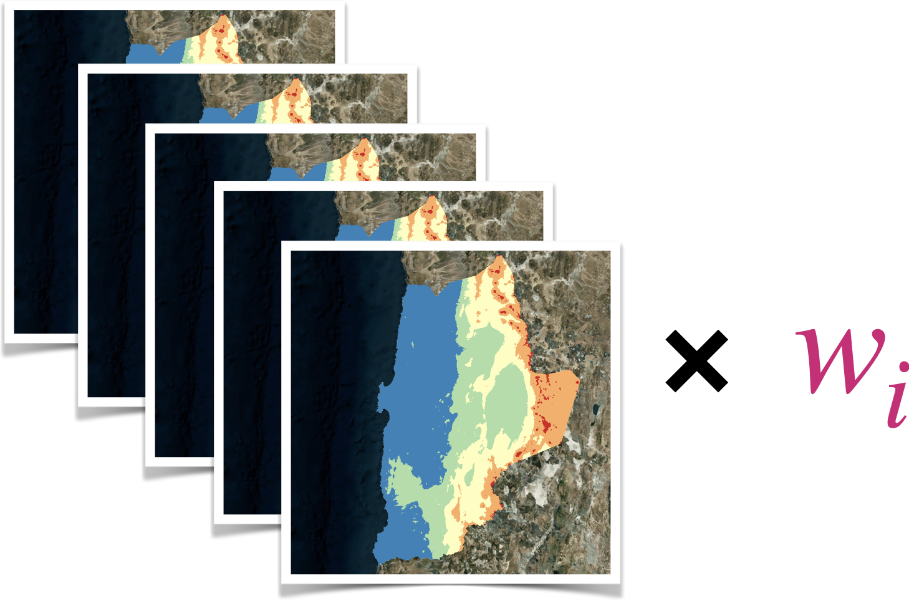
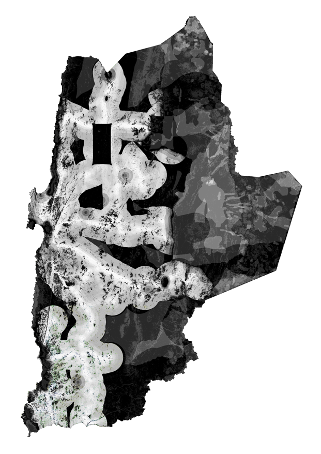
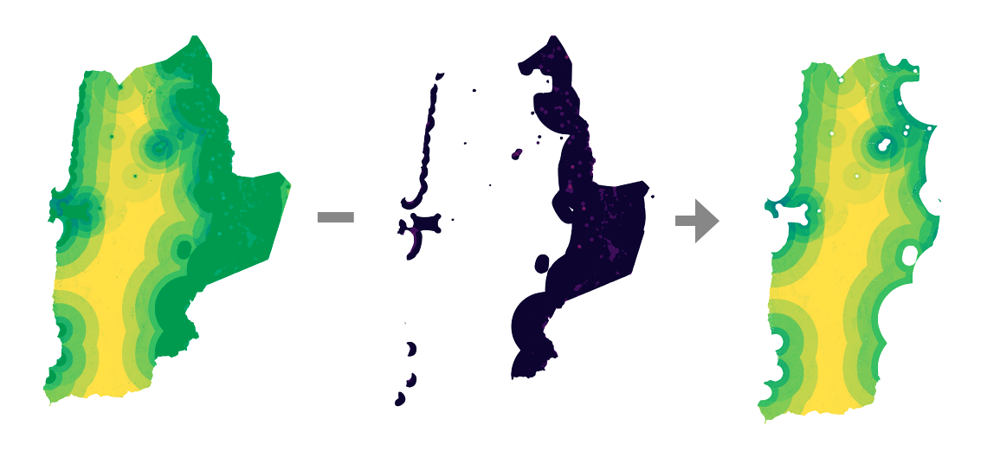
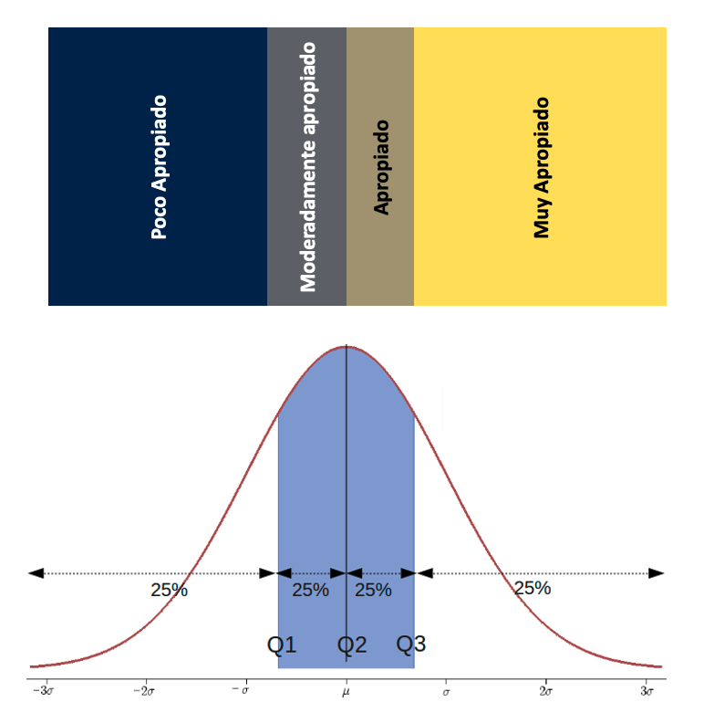
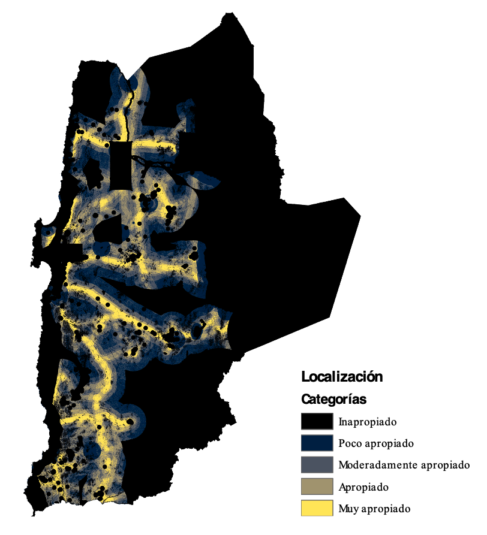
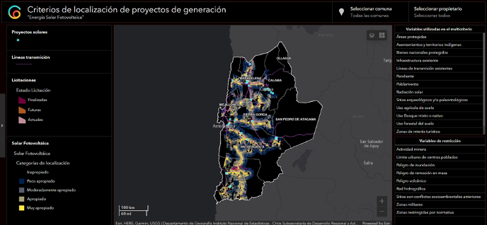

| Temática | Capas | Buffer |
|---|---|---|
| SOCIAL | SITIOS CON CONFLICTOS SOCIOAMBIENTALES ANTERIORES | 500 |
| AMBIENTAL | PELIGRO REMOCIÓN EN MASA | 500 |
| AMBIENTAL | PELIGRO DE TSUNAMI | 500 |
| AMBIENTAL | PELIGRO VOLCÁNICO | 500 |
| AMBIENTAL | MASAS LACUSTRES | 500 |
| AMBIENTAL | RIOS Y ESTEROS | 500 |
| PATRIMONIO | FAENAS REG | 500 |
| NORMATIVA | ZONAS DE EXCLUSION AEREA | 0 |
| NORMATIVA | ZONAS RESTRINGIDAS POR EL PRI | 0 |
| NORMATIVA | ZONAS RESTRINGIDAS POR EL PRC | 0 |
| NORMATIVA | LIMITE URBANO | 500 |
8 Evaluación Espacial
8.1 Introducción
La etapa de evaluación final, corresponde al proceso de ponderación de las variables discretizadas por los criterios por cada valor de peso de ponderación w resultante del Proceso de Análisis Jerárquico, posteriormente estos resultados se reducen a través de una suma obteniendo una representación espacial continua tipo raster, que presenta numéricamente la idoneadad para la construcción de alguna planta de generación de energía eléctrica. Posteriormente se procede a realizar filtros espaciales por restricción de acuerdo zonas declaradas inaceptables para la construcción. A cotinuación se explicarán cada uno de estos paso de foma detallada
8.2 Superposición Ponderada de Criterios por w (APH)
El proceso de superposición ponderada corresponde a la multiplicación espacial de de cada variable discrerizada resultante de la reclaficación por criterio (Section 6.3) por cada ponderación w resultante del proceso de análisis jerárquico (Section 7.4) de forma independiente.

Luego todos estos resultados espaciales (rasters) se suman generando los resultados de idoneidad numéricamente para la generación de energía eléctrica.

8.3 Restricciones
Los resultados de supersición ponderada de varibles por ponderaciones, sele debe aplicar dos tipos de restricciones. La primera corresponde a todos los territorios que fueron definidos como criterio de inaceptable (rango 1) en las diversas mesas de participación. La segunda restricción corresponde a territorios específicos que por sus condiciones y características normativas e intalaciones previas, se es posible contruir algina plata de generación de energía, algunos de los territorios que se requieren no considerar como zona idonea son las coberturas espaciales consignadas en la Table 8.1 a las que según sea el caso se le aplicó una ampliación de sus superficie por cierta cantidad metros denominado buffer.
Para enternder las restricciones territoriales antes descritas se puede entender como una resta directa de capas como se observa a continuación.

8.4 Caterización de los resultados
Los resultados de supersición ponderada de varibles por ponderaciones ya filtrados por las coberturas de restricción, correspodientes a las zonas idoneas ordenadas numéricamente (valores continuos) se le aplica una clasificación (valores discretos) en 4 niveles para facilitar su interpretación espacial en el territorio. Espos cuantro niveles se definieron con las categorías de “Poco Apropieado”, “Moderadamente Apropiado”, “Apropiado” y “Muy Apropiado”, mientras que todo elterritorio entendido como restricción se clasifico como “Inapropiado”. Para la clasificación de los valores fue realizada dividiendo la distribución en quartiles (?fig-q4).

Espacialmente los resultado se presentan de la siguiente forma

8.5 Resultados
Para presentar los resultados se crearon dashboard de los cuales se puede acceder del siguiente link
